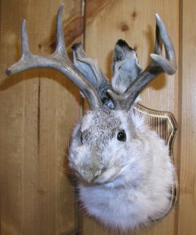

|
JackalopesCreature containing the body of a jackrabbit and the antlers of a deer, both of these animals being suspiciously popular for hunting among the types of folks with jackalopes mounted on their walls. Very popular to show to children, who buy in unquestioningly, since the alternative is too hard to swallow at such a young age: that grown adults would kill two creatures and attach their carcasses to each other to put up for display.The most common sighting of Jackalopes is along the wall of a restaurant or lodge, next to other, more mundane slaughtered animals, providing a vague sense of legitimacy to the legend of the Jackalope. More recent tales of the Jackalopes give them special powers or abilities that make them more worthy adversaries than rabbits or deer, who tend to be realtively easy to pick off. Jackalope mountings have become popular enough that they are often sold at roadside attractions or as mail-order specials from taxidermy supply houses. They make, as they say, "great conversation pieces", although they don't make any guarantees as to the quality of those conversations. See also Snipes. |